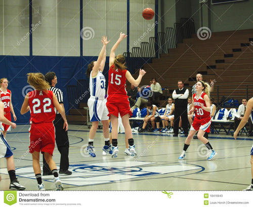
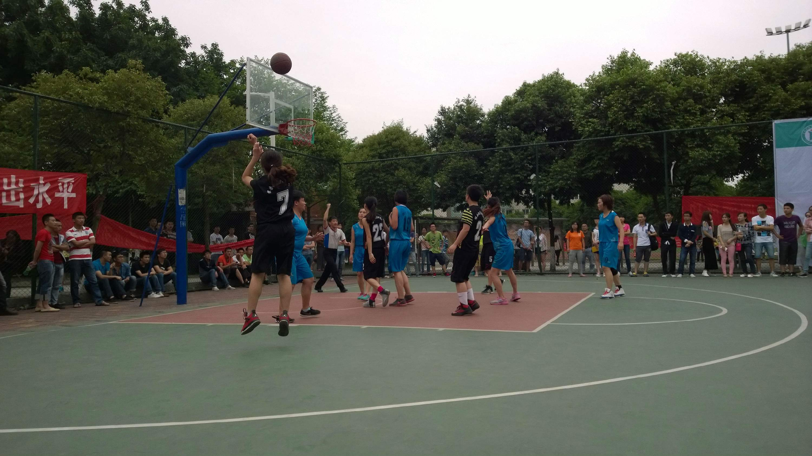
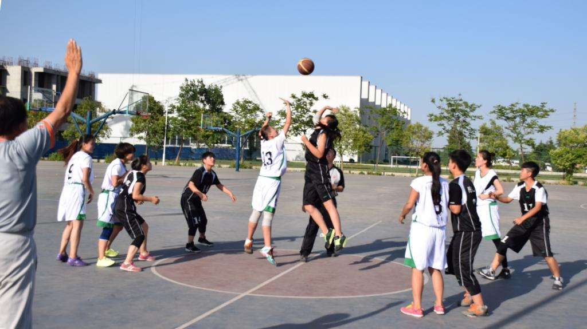

1、生活就像一杯白开水，滴一滴墨汁，黑色会迅速扩散，
遮盖整个世界，黑暗笼罩，
滴一滴红色，热情、奔放会被渲染，自己的心情也灿烂。
2、生活就像爬大山。在山下的时候，你仰望高山，
你看见的是整座大山，看到的是山的伟岸，山的秀丽，
山的令人遐思与浮想联翩的动人风韵。
当你动用蓄集了整个青春的力量准备爬山的时候，你满怀信心，
雄心万丈，一付山不怕高、有志则行的踌躇满志的模样，
幻想着登上山巅时的一览众山小的美景和风光。


3、生活就像一面镜子，
人们从生活中看到的东西，就是自己心态的映照。
假如你的心态是暗淡的，那生活在你的眼里就会使暗淡无光的；
假如你的心态是晴朗的，那么生活在你的眼里就会充满阳光。
如果一个人永远带着无奈、怀疑、恐惧、忧虑去生活，那无疑是在煎熬生命。反之，一个人倘若能生活在充满生之喜悦的安详之中，就会发现生活原来是这样的美好，
他的心情就会一片宁静。而这正是我们大家都应该拥有的人生态度！
4、生活，就像一场场演出而每一场演出，我都只能在曲将终了，
人将散去之际上场而此曲过后，谢幕，场空，惟留下你渐渐消散的余香。
